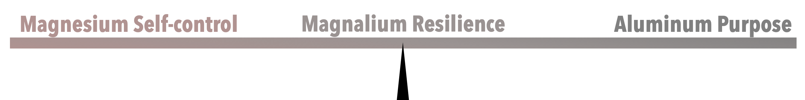

Together Self-Control and Purpose combine to make strong and flexible Resilience to help children and teens as they face unforeseen challenges with perseverance and the ability to pivot and utilize creative solutions in difficult circumstances to achieve their goals in health and happiness throughout their personal and professional and career.
This block in the top block on the tower of Happiness and The Arts . Utilizing the attributes of Discernment in block #7 and building on top of skills and abilities allow students to gain the needed personal strength to overcome problems and reach goals. Students often miss the understanding of the overall goal of living and learning at school. We as educators and parents can mistakenly pressure our students and children to perform and excel using our own expectations and objectives without conveying to them that their choice and joys are a high priority in the process of choosing their personal and professional pathways. Whether a student chooses a path of science, medicine, architecture, government, psychology, any path requires the ability to artfully design their timeline to reach their goals, their workspaces, and their aspirations. This block includes activities that convey a permission and invitation to design their life going forward. This combination of purpose and self-control or self-ownership is the catalyst to resilience. The lives of over-comers model this mindset equation. Abraham Lincoln, Martin Luther King, Helen Keller, Gandhi, and many others have used the combination of creative ownership and self-control with purpose to overcome monumental challenges with resilience to achieve purposes that help themselves and their community in helpful and meaningful ways.
Magnesium and Aluminum smelt together to make an alloy called Magnalium.
Many people make a good living using this alloy made from metals from our earth for industries that buy sell, make, and use aircraft, automobile, pyrotechnics.
Just like Magnesium and Aluminum smelt together to make the alloy called Magnalium, Self-control and Purpose smelt together to make Reseilience
